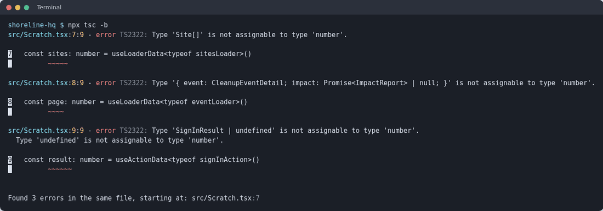
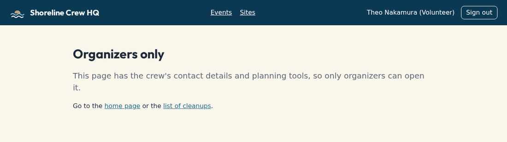

🛂 Lesson 6.3: Data Loading and Protected Routes
At the end of the last lesson you opened /events/new while signed out, and the planning form appeared for anyone who knew the address. Today every page that belongs to organizers gets a guard at the door: guests are sent to sign in and then straight back to where they were going, and volunteers get a clear "Organizers only" page. On the way, pages stop flashing "Loading…": React Router's loaders fetch a page's data before the page appears, its actions handle the sign-in form, and a sign-in that the API has forgotten ends by itself instead of leaving the HQ stuck. Nearly every real app you will work on has this layer, and you are about to build all of it.
🎯 Learning Objectives
By the end of this lesson, you will be able to:
- Explain the difference between rendering then fetching and loading then rendering, and when each fits
- Write typed route loaders and read their data with
useLoaderData<typeof loader>() - Turn failures while loading into route answers with
data(), and show them withuseRouteErrorandisRouteErrorResponse - Protect routes with guard loaders that redirect to sign-in with a safe
?next=address, and answer 403 to people without the right role - Handle a form with a route action,
<Form>,useActionDataand a redirect - Keep a session that React and the router both read, with
useSyncExternalStore, and sign out automatically on a 401
📦 Code for this lesson
Starting code: lesson-23-start.zip · Finished code: lesson-23-end.zip. Each folder has a README with the commands to run it. Copy .env.example to .env.local in shoreline-hq before npm run dev.
In This Lesson
⏳ Render Then Fetch, or Load Then Render
Since Lesson 4.1 every HQ page has worked the same way: the router shows the page, the page's effect (now inside useApi) starts a request, and until the answer arrives the page says "Loading…". That is render then fetch. It is simple, and for some data it is exactly right, but it has three costs you have already met:
- A flash on every visit. Click a cleanup and the page appears empty, says "Loading the cleanup…", then fills in.
- Back cannot find your place. Lesson 6.1 measured it: scroll down a list, open something, press Back, and you land at the top, because the router restores the scroll position before the list has arrived.
- Rules arrive late. The Volunteers page decides in its own render whether you may see it. A page that guards itself has already started to draw, and every page has to remember to do it.
React Router's data mode, which the HQ has used since Lesson 6.1, offers the other order: load then render. A route can have a loader, a function the router calls as soon as someone navigates to the address. The router waits for it, and only then swaps the new page in, already holding its data. Meanwhile the old page stays on screen.
💡 Mental model: the harbor master
Before a crew boat leaves the dock, the harbor master checks two things: the tide table (is the information ready?) and the permit (is this crew allowed out?). Only then does the boat move. A loader is the harbor master for a route. It can hand over the tide table (data), send the boat to another dock first (a redirect to sign-in), or post a notice explaining why the trip is off (an error page). The page itself only ever sees a boat that was cleared to go.
Why this matters: "no flash, Back works, rules in one place" is what makes an app feel solid, and the loader pattern is how React Router, Remix-style frameworks and TanStack Router all approach it. Lesson 7.1 adds a cache under these loaders; the shape you learn today stays.
Load then render is not always better. A search box that changes the list with every letter should not freeze the page while each request runs. The events list keeps its useApi today for that reason, and you will measure why in the Common Mistakes.
🚚 Loaders
A loader is a plain function on a route object. The router calls it with an object of type LoaderFunctionArgs: params (the :eventId parts of the address, as in useParams) and request, a standard web Request whose url is the full address and whose signal is aborted if the person navigates away before the loader finishes. Whatever the loader returns (or the value its promise resolves to) becomes the route's data. The smallest useful one is the sites page's:
// Route loaders: the router calls them when an address is opened, and shows the page once they finish (Lesson 6.3)
import { data, type LoaderFunctionArgs } from 'react-router'
import { ApiError, getEvent, getImpact, getSites } from '../api/client.ts'
/** /sites: the six beach sites */
export function sitesLoader({ request }: LoaderFunctionArgs) {
// request.signal: leaving the page before the answer arrives cancels the request
return getSites(request.signal)
}
// ...It goes on the route with loader: sitesLoader, and the page reads the result with useLoaderData. TypeScript cannot know which loader belongs to which component (they meet only in the route list), so you tell it: useLoaderData<typeof sitesLoader>(). The type argument is the loader function's type; React Router works out the data type from what it returns, unwrapping the promise. Two things to notice:
import type { sitesLoader }is enough.typeofin a type position only needs the type, so the page does not import the loader's code.- Without the type argument,
useLoaderData()returnsany: whatever you write after it compiles, typos included.
A handy trick to see what a Hook returns: assign it to a variable of a type it cannot be, and read the error.
import { useActionData, useLoaderData } from 'react-router'
import type { signInAction } from './auth/signInAction.ts'
import type { eventLoader, sitesLoader } from './pages/loaders.ts'
// Ask TypeScript what each Hook returns: put the answer where a number is expected
export function Scratch() {
const sites: number = useLoaderData<typeof sitesLoader>()
const page: number = useLoaderData<typeof eventLoader>()
const result: number = useActionData<typeof signInAction>()
const untyped: number = useLoaderData()
return <p>{sites}{page}{result}{untyped}</p>
}
number is expected and read the error. With typeof sitesLoader the router's Hooks know the exact shapes; the untyped call is any and says nothing.Expected output
src/Scratch.tsx:7:9 - error TS2322: Type 'Site[]' is not assignable to type 'number'.
7 const sites: number = useLoaderData<typeof sitesLoader>()
~~~~~
src/Scratch.tsx:8:9 - error TS2322: Type '{ event: CleanupEventDetail; impact: Promise<ImpactReport> | null; }' is not assignable to type 'number'.
8 const page: number = useLoaderData<typeof eventLoader>()
~~~~
src/Scratch.tsx:9:9 - error TS2322: Type 'SignInResult | undefined' is not assignable to type 'number'.
Type 'undefined' is not assignable to type 'number'.
9 const result: number = useActionData<typeof signInAction>()
~~~~~~
Found 3 errors in the same file, starting at: src/Scratch.tsx:7Three exact types: Site[], the event loader's object (you write it in the project), and the sign-in action's result or undefined. Line 10, the untyped call, produced no error at all: any is assignable to number, and to everything else. Always pass typeof yourLoader.
While the loader runs: useNavigation
With a loader, a click does not swap in a half-empty page. The current page stays until the next one is ready, which means people need a sign that the click worked. useNavigation() describes the navigation in progress: state is 'idle', 'loading' (loaders running) or 'submitting' (an action running). The HQ's layout uses it once for every page: it fades the old page a little and shows a small "Loading…" sign at the bottom of the window.

--latency=1500 to catch this.Measured with the API slowed down by --latency=1500: 300 ms after the click the address still said /events, the heading was still "Cleanup events", the sign said "Loading…" and main had aria-busy="true"; the text "Loading the cleanup" never appeared. Once the cleanup arrived, the sign was empty again. The sign is a role="status" region, so screen readers announce "Loading…" too.
Back finds your place again
Because the data comes before the page, a list is already full height when the router restores the scroll position. Measured on the Beach sites page: scrolled down 670 px, then Events in the header, then Back: the page came back at 670 px. The same steps with the sites page from Lesson 6.2 (fetching in useApi) came back at 0. The events list, which keeps useApi, still comes back at 0 (from 1200 px); Lesson 7.1's cache fixes that one, because a cached list can render at once.
🧯 When Loading Fails, and What Can Wait
Anything a loader throws ends up in the nearest errorElement of its route, the same place render crashes have gone since Lesson 6.1. That covers the surprises (the API is down) for free. For the expected failures, such as "there is no cleanup with this id", a loader throws an answer instead of a crash, built with data():
if (error instanceof ApiError && error.status === 404) {
const message = 'There is no cleanup at this address. The link may be wrong, or the cleanup is not public.'
throw data(message, { status: 404, statusText: 'Cleanup not found' })
}The error page reads whatever was thrown with useRouteError(). Its return type is unknown, honestly: a loader can throw anything. isRouteErrorResponse(error) is a type predicate that narrows it to ErrorResponse, with status, statusText and data. data is typed any (it is whatever you passed), so the HQ checks typeof answer.data === 'string' before showing it. The result is one ErrorPage for every route: answers show their own heading and message, crashes and network failures show "Something went wrong on this page" with describeError's explanation and Try again.

ErrorPage handles every route.Measured: /events/e99 showed "Cleanup not found" with the loader's sentence, the title "Cleanup not found · Shoreline Crew HQ", and no role="alert" (it is an answer, not an alarm). With the API stopped, clicking Sites showed "Could not reach the server. Check that shoreline-api is running, then try again."; after starting the API, Try again brought the Beach sites page.
Await what the page needs, start what can wait
A completed cleanup's page also shows its impact report, in the Impact tab. The page can appear without it, so there is no reason to make everyone wait for two requests. A loader may put an unawaited promise in its result: the router does not wait for it, and the page hands it to a component that calls use() inside <Suspense>, exactly as in Lesson 4.4. The rule for which is which:
| Await it in the loader | Return it as a promise |
|---|---|
| The page makes no sense without it (the cleanup itself) | A part of the page can say "Loading…" for a moment (the impact report) |
| It decides the answer (404, redirect) | It is slow or optional, and an error in it should not cost the whole page |
The promise must be the same promise on every render, which Lesson 4.4 solved with a module-level cache in eventPromises.ts. Loader data is kept by the router until the next navigation, so it is stable by design: that file can go. Measured with --latency=1500: the cleanup appeared, the Impact tab showed "Loading the impact report…", then the report.
🛂 Protected Routes
A guard is a loader that returns nothing useful; its job is to throw. Two kinds of throw do the work:
redirect('/sign-in?next=…')for guests.redirectbuilds a 302Response; thrown from a loader, the router follows it before anything renders.data(message, { status: 403, statusText: 'Organizers only' })for people who are signed in but not allowed. A 403 is not a sign-in problem: signing in again would not help Theo, a volunteer, so he gets an explanation instead of a loop back to the sign-in page.
The next parameter is the way back: the guard puts the path and search the person asked for into it (encoded with encodeURIComponent, because it is an address inside an address), and the sign-in action sends them there afterwards. Measured: a guest opening /volunteers?skill=first-aid landed on /sign-in?next=%2Fvolunteers%3Fskill%3Dfirst-aid, with no request to the API for the crew; after signing in, the address was /volunteers?skill=first-aid with "First aid" chosen.
One guard can protect many pages. A route with no path (a pathless route, from Lesson 6.1) and a loader runs for every child below it:
{
// Organizers only: this guard runs before any of these pages appears
loader: organizersOnly,
shouldRevalidate: onlyWhenThePathChanges,
children: [
{ path: 'events/new', element: <NewEventPage /> },
// ...(shouldRevalidate is explained in the Common Mistakes.)
🛑 Two security rules for guards
A guard is a courtesy; the API is the lock. Everything in the HQ runs in the visitor's browser, where they can change the code. The guard gives people a clear path, and the API's 401 and 403 answers (Lesson 5.2) keep the data safe. Never put anything in front-end code that a guard is supposed to hide.
Never redirect to whatever ?next= says. Anyone can send an organizer a link like /sign-in?next=https://elsewhere.example; after a real sign-in, the HQ would hand them to someone else's page, which could ask for the password "again". This is called an open redirect. Accept only paths inside the app: they start with one /, not // (which browsers read as another site) and not /\. Measured with the check removed: signing in with ?next=http://localhost:4000/api left the HQ for the API's page. With the check: /.
🧭 A Session Outside React
Loaders run before any component renders, outside React. They cannot call useAuth(): Hooks only work while a component renders (oxlint says so too; see Common Mistakes). Since Lesson 5.2 the session has lived in AuthProvider's state, with sessionStorage as a copy. Now three outsiders need it: the guards read it, the sign-in action writes it, and request() must clear it when the API answers 401.
So the session moves to where all of them can reach it: client.ts, as a tiny store. A store is a value plus a way to be told when it changes: readSession() gives the current value, saveSession() changes it and calls every listener, onSessionChange(listener) subscribes and returns the function that unsubscribes. React reads an outside store with a Hook made for exactly this, useSyncExternalStore(subscribe, getSnapshot): React calls subscribe once, re-renders when a listener fires, and reads the value with getSnapshot. The snapshot must be the same object until the value really changes, which is why readSession() returns the saved variable instead of parsing sessionStorage each time.
💡 Mental model: the harbor board, again
In Lesson 5.2 the session was something one component remembered and passed around. Now it is a notice pinned on the harbor board: anyone can read it, the harbor office (client.ts) is the only one who changes it, and the people who care (React, the router) asked to be told when a new notice goes up. Lesson 7.3's Zustand is this same idea as a library.
Two listeners make the rest automatic. AuthProvider re-renders, so the header, the drafts and useApi (keyed by viewer since Lesson 5.2) all follow. And AppLayout asks the router to run the current page's loaders again with useRevalidator().revalidate(), so a guard notices when its visitor has signed out. Then the automatic sign-out is one if in request(): a 401 on a request that carried a token means the API no longer knows this sign-in (shoreline-api keeps sessions in memory, so a restart forgets them all), so the client forgets it too. Measured after restarting the API while Maya was signed in:
| Maya was… | What happened |
|---|---|
on /events and clicked Weekend Cove Cleanup (a loader) | The cleanup opened as a guest would see it; the header said Sign in; the saved session was gone |
on /volunteers and clicked Aisha Rahman | Sent to /sign-in?next=%2Fvolunteers%2Fv20; after signing in, back on Aisha's card |
on /events and typed a search | The list reloaded as a guest's list; the header said Sign in |
Before this lesson, all three showed "Your sign-in has ended. Sign out, then sign in again." until she clicked Sign out herself. The message now reads "Your sign-in has ended. Sign in again.", for the moment before the HQ catches up.
📨 Actions: Forms the Router Handles
Loaders answer "what does this page need to show?"; actions answer "someone sent this page a form". A route's action runs when a React Router <Form method="post"> on that route is submitted. It receives ActionFunctionArgs (the same request and params); await request.formData() gives the fields, typed FormDataEntryValue | null as in Lesson 3.5, so you narrow them with typeof. An action can:
- return a value: the page reads it with
useActionData<typeof action>(), which isundefineduntil the form has been sent once (the sign-in page uses it for "Email or password is incorrect."); - throw a redirect: on success, sign-in goes to
?next=. Throwing (rather than returning) keeps the action's return type to just your result type; - and afterwards the router runs the loaders of the page you end up on, so everything shows data from after the change. This revalidation is why actions and loaders belong together.
<Form> without an action attribute posts to the current address, search included: measured, a wrong password left the address at /sign-in?next=%2Fvolunteers%3Fskill%3Dfirst-aid, so the next try still knew the way back. While the action runs, useNavigation().state is 'submitting', then 'loading' while the next page's loaders run; the button says "Signing in…" for both.
| React 19 form action (Lesson 3.5, 5.2) | React Router action (today) | |
|---|---|---|
| Where it lives | In the component: useActionState(fn, initial) | On the route; the component reads useActionData |
| Can redirect | Only by calling navigate yourself | throw redirect(…), before the next page renders |
| Afterwards | Nothing else runs | The router re-runs the loaders |
| Fields after submitting | React resets the form | Fields keep what was typed, unless you clear them (the HQ empties the password itself) |
| Good for | Forms that only change what the component shows | Forms that change where you are or what every page shows (signing in) |
The planning form keeps its useActionState for now; Lesson 7.2 sends it to the API with TanStack Query's mutations, and Lesson 8.1 moves it to React Hook Form.
🔭 What Lesson 7.1 Changes
Loaders decide when data is loaded; they do not keep it. Every visit to a cleanup asks the API again, and a list that changes as you type does not suit a loader at all. Lesson 7.1 adds TanStack Query, a cache, under the same routes. Today's code is written so that step is small:
| Today (6.3) | In Lesson 7.1 |
|---|---|
sitesLoader calls getSites | The loader asks the cache to make sure the sites are there; the page reads them from the cache |
eventLoader awaits the cleanup, starts the impact report | Same split: await the cleanup in the cache, start the report without waiting |
useApi for typed searches, the roster, the volunteer card | Query Hooks keyed by the same strings; useApi is deleted |
Guards, ErrorPage, the sign-in action, the session store | Unchanged |
⚠️ Common Mistakes
⚠️ Calling a Hook in a loader
It is tempting to reach for the Hook you already have. It type-checks, but oxlint stops it, with an error rather than a warning:
Expected output
> shoreline-hq@0.0.0 lint
> oxlint
× react-hooks(rules-of-hooks): React Hook "useAuth" is called in function "organizersOnly" that is neither a React function component nor a custom React Hook function. React component names must start with an uppercase letter. React Hook names must start with the word "use".
╭─[src/auth/guards.ts:20:23]
18 │ /** For pages with contact details and planning tools: guests sign in first, volunteers are turned away */
19 │ export function organizersOnly({ request }: LoaderFunctionArgs) {
· ───────┬──────
· ╰── Outer function
20 │ const { session } = useAuth()
· ───┬───
· ╰── Hook is called here
21 │ if (session === null) {
╰────
Found 0 warnings and 1 error.
Finished in 14ms on 59 files with 150 rules using 20 threads.A loader is not a component; there is no render for the Hook to belong to. Read the store (readSession()) instead.
⚠️ A loader in the page's .tsx file
Keeping a loader next to its page feels tidy, and it compiles, but it costs Fast Refresh for that file (the same rule as Lesson 5.2's context):
Expected output
> shoreline-hq@0.0.0 lint
> oxlint
⚠ react(only-export-components): Fast refresh only works when a file only exports components. Use a new file to share constants or functions between components.
╭─[src/Scratch.tsx:5:17]
4 │ // The loader in the same .tsx file as the page that uses it
5 │ export function sitesLoader({ request }: LoaderFunctionArgs) {
· ───────────
6 │ return getSites(request.signal)
╰────
Found 1 warning and 0 errors.
Finished in 13ms on 60 files with 150 rules using 20 threads.The HQ keeps loaders in pages/loaders.ts, guards in auth/guards.ts and the action in auth/signInAction.ts, and pages use import type for typeof.
⚠️ A guard that runs on every letter
By default the router runs a route's loader again whenever the search part of the address changes. The Volunteers search box changes it with every letter, and a navigation with a loader waits for that loader, even one that finishes at once. Lesson 6.2's flushSync cannot help with that wait. Measured without shouldRevalidate on the guard route: typing "mra", moving the cursor two places left and typing "a" gave "mara" with the cursor thrown to position 4 instead of 2. The fix tells the router when the guard may be skipped: when only the search changed. With it: position 2. Both versions type-check and lint cleanly; only the behavior tells you.
⚠️ useLoaderData() without its type
With no type argument it returns any, so this compiles with no error from npx tsc -b and shows nothing on screen:
import { useLoaderData } from 'react-router'
// No type argument: useLoaderData() returns any, so this typo compiles
export function Scratch() {
const sites = useLoaderData()
return <p>{sites[0].nmae}</p>
}Write useLoaderData<typeof sitesLoader>() every time; then sites[0] is Site | undefined and the typo is an error.
⚠️ A guard that only lives in the parent
Loaders of a route and its children run at the same time, not one after the other. A child route with its own loader under the organizersOnly route still sends its request for a guest, before the guard's redirect wins. Exercise 3 measures it and shows the fix.
🛠️ Project: Guarded, Preloaded HQ
Steps 1 to 4 write the pieces; Step 5 connects them to the router. In between, the running app is half-wired (a page that expects loader data before its route has a loader will show the error page): that is expected. Keep shoreline-api and npm run dev running.
Step 1: Loaders and one error page (14 min)
Create src/pages/loaders.ts with the two data loaders. The event loader awaits the cleanup, turns the API's 404 into a route answer, and starts the impact report without waiting for it (only completed cleanups have one):
// Route loaders: the router calls them when an address is opened, and shows the page once they finish (Lesson 6.3)
import { data, type LoaderFunctionArgs } from 'react-router'
import { ApiError, getEvent, getImpact, getSites } from '../api/client.ts'
/** /sites: the six beach sites */
export function sitesLoader({ request }: LoaderFunctionArgs) {
// request.signal: leaving the page before the answer arrives cancels the request
return getSites(request.signal)
}
/** /events/:eventId: the cleanup now, its impact report (if it has one) when it arrives */
export async function eventLoader({ params, request }: LoaderFunctionArgs) {
const { eventId } = params
if (eventId === undefined) {
throw new Error('eventLoader needs a route with an :eventId parameter')
}
try {
const event = await getEvent(eventId, request.signal)
// Not awaited: the page shows without it, and the report follows (use() + Suspense)
const impact = event.status === 'completed' ? getImpact(eventId) : null
return { event, impact }
} catch (error: unknown) {
if (error instanceof ApiError && error.status === 404) {
const message = 'There is no cleanup at this address. The link may be wrong, or the cleanup is not public.'
throw data(message, { status: 404, statusText: 'Cleanup not found' })
}
throw error
}
}TypeScript infers the event loader's return type, Promise<{ event: CleanupEventDetail; impact: Promise<ImpactReport> | null }>, from the return; the throws do not add to it. That is why the guards and the action throw their redirects and answers.
Next, the error page every route will share. It replaces PageCrashed in App.tsx (you delete that in Step 5). Create src/pages/ErrorPage.tsx:
import { isRouteErrorResponse, Link, useLocation, useNavigate, useRouteError } from 'react-router'
import { describeError } from '../api/client.ts'
import { Button } from '../components/Button.tsx'
import { useDocumentTitle } from '../hooks/useDocumentTitle.ts'
import styles from './Page.module.css'
// The router shows this instead of a page that could not load or crashed; the header and footer stay
export function ErrorPage() {
const error = useRouteError()
const location = useLocation()
const navigate = useNavigate()
// A loader's answer (thrown with data()) carries a status, a heading and a message
const answer = isRouteErrorResponse(error) ? error : null
const heading = answer?.statusText || 'Something went wrong on this page'
useDocumentTitle(heading)
if (answer !== null) {
return (
<>
<h1>{heading}</h1>
<p className={styles.lead}>
{typeof answer.data === 'string' ? answer.data : 'There is nothing to show at this address.'}
</p>
<p>
Go to the <Link to="/">home page</Link> or the <Link to="/events">list of cleanups</Link>.
</p>
</>
)
}
// Anything else: a request that failed, or a bug in a component
return (
<div role="alert">
<h1>{heading}</h1>
<p>{describeError(error)}</p>
<p>
<Button onClick={() => navigate(location, { replace: true })}>Try again</Button>{' '}
<Link to="/">Go to the home page</Link>
</p>
</div>
)
}answer?.statusText || '…' uses || on purpose: a response without a status text has '', which should fall back too (?? only falls back for null and undefined). Then the sites page loses its fetching; replace src/pages/SitesPage.tsx:
import { useLoaderData } from 'react-router'
import { DataList } from '../components/DataList.tsx'
import { SiteCard } from '../components/SiteCard.tsx'
import { useDocumentTitle } from '../hooks/useDocumentTitle.ts'
import type { sitesLoader } from './loaders.ts'
import styles from './Page.module.css'
export function SitesPage() {
useDocumentTitle('Beach sites')
// The router ran sitesLoader before showing this page: the sites are already here
const sites = useLoaderData<typeof sitesLoader>()
return (
<>
<h1>Beach sites</h1>
<p className={styles.lead}>Six stretches of coast the crew looks after.</p>
<DataList
items={sites}
getKey={(site) => site.id}
emptyMessage="No beach sites yet."
renderItem={(site) => <SiteCard site={site} />}
/>
</>
)
}No LoadStatus, no kind === 'ready' check: by the time this component renders, the sites are there or the error page is showing.
Step 2: The event page reads its loader (14 min)
In src/pages/EventPage.tsx, change the imports at the top:
-import { Suspense, use } from 'react'
-import { Link, useParams } from 'react-router'
-import { ApiError, describeError, getRoster } from '../api/client.ts'
-import { eventPromise, forgetEvent } from '../api/eventPromises.ts'
+import { Suspense } from 'react'
+import { Link, useLoaderData } from 'react-router'
+import { describeError, getRoster } from '../api/client.ts'
import type { CleanupEventDetail } from '../api/types.ts'
import { useAuth } from '../auth/AuthContext.ts' import { formatDate, toDateString } from '../utils/format.ts'
import styles from './EventPage.module.css'
+import type { eventLoader } from './loaders.ts'
import pageStyles from './Page.module.css'
Delete the EventDetailsProps interface:
interface TodaysDeskProps {
eventId: string
-}
-
-interface EventDetailsProps {
- eventId: string
- viewer: string
}
Keep today, TodaysDesk and AboutCleanup as they are. Replace everything from EventDetails to the end of the file (EventDetails, EventProblem and the old EventPage) with:
// What the impact tab shows when the report could not be loaded
function ImpactProblem({ error }: FallbackProps) {
return (
<LoadStatus state={{ kind: 'failed', message: describeError(error) }} what="the impact report" />
)
}
// The route is events/:eventId: eventLoader has loaded the cleanup before this page renders
export function EventPage() {
const { event, impact } = useLoaderData<typeof eventLoader>()
const { isOrganizer } = useAuth()
useDocumentTitle(event.title)
const checkInDay = isOrganizer && event.status === 'scheduled' && event.date === today
return (
<>
<p>
<Link to="/events">← All cleanups</Link>
</p>
<article>
<h1>{event.title}</h1>
<p className={styles.badges}>
<StatusBadge status={event.status} />
</p>
<p className={pageStyles.lead}>
<time dateTime={event.date}>{formatDate(event.date)}</time>, {event.startTime} to{' '}
{event.endTime}
</p>
<SpotsLine availability={getAvailability(event)} capacity={event.capacity} />
{checkInDay || impact !== null ? (
// A new key for each cleanup: fresh tabs, nothing selected from the last one
<Tabs key={event.id} defaultTab={checkInDay ? 'desk' : 'details'}>
<TabList label="About this cleanup">
<Tab id="details">Details</Tab>
{checkInDay && <Tab id="desk">Check-in desk</Tab>}
{impact !== null && <Tab id="impact">Impact</Tab>}
</TabList>
<TabPanel id="details">
<AboutCleanup event={event} />
</TabPanel>
{checkInDay && (
<TabPanel id="desk">
<TodaysDesk eventId={event.id} />
</TabPanel>
)}
{impact !== null && (
<TabPanel id="impact">
<ErrorBoundary fallback={ImpactProblem}>
<Suspense fallback={<LoadStatus state={{ kind: 'loading' }} what="the impact report" />}>
<ImpactSummary impact={impact} />
</Suspense>
</ErrorBoundary>
</TabPanel>
)}
</Tabs>
) : (
<AboutCleanup event={event} />
)}
</article>
</>
)
}The page got simpler: no useParams, no viewer, no Suspense around the whole cleanup, no "not found" branch (the error page has it). The key={event.id} moved to Tabs: going from one completed cleanup to another keeps EventPage mounted, and the key gives the tabs (and the impact boundary inside them) a fresh start. The ErrorBoundary from Lesson 4.4 now guards only the impact report, so a missing report costs one tab, not the page.
ImpactSummary receives the promise instead of fetching. In src/components/ImpactSummary.tsx:
-import { getImpact } from '../api/client.ts'
-import type { DebrisCategory } from '../api/types.ts'
-import { useApi } from '../hooks/useApi.ts'
+import { use } from 'react'
+import type { DebrisCategory, ImpactReport } from '../api/types.ts'
import { DataList } from './DataList.tsx'
-import { LoadStatus } from './LoadStatus.tsx'
// The API's labels for its debris categories (GET /api/meta lists the same ones)
interface ImpactSummaryProps {
- eventId: string
+ /** The report on its way: the event page's loader started the request */
+ impact: Promise<ImpactReport>
}
-// What a completed cleanup took off the beach, from its impact report
-export function ImpactSummary({ eventId }: ImpactSummaryProps) {
- const impact = useApi(`/events/${eventId}/impact`, (signal) => getImpact(eventId, signal))
-
- if (impact.state.kind !== 'ready') {
- return <LoadStatus state={impact.state} what="the impact report" onRetry={impact.reload} />
- }
- const report = impact.state.data
+// What a completed cleanup took off the beach. Suspends until the report arrives.
+export function ImpactSummary({ impact }: ImpactSummaryProps) {
+ const report = use(impact)
const mostFirst = report.items.toSorted((a, b) => b.count - a.count)
Finally, delete src/api/eventPromises.ts: the router keeps the loader's data, which was that file's only job. In VS Code, right-click it in the Explorer and choose Delete.
Step 3: The session moves into a store (10 min)
In src/api/client.ts, replace the old readSession and saveSession (the section under "the session", after sessionKey) with the store:
// What sessionStorage holds, checked: null when nothing (or not a session) is saved
function loadSession(): Session | null {
const saved = sessionStorage.getItem(sessionKey)
if (saved === null) return null
try {
const value: unknown = JSON.parse(saved)
return isSignInResponse(value) ? value : null
} catch {
return null
}
}
// The session lives here, outside React, so loaders and actions can read and change it too
let current = loadSession()
const listeners = new Set<() => void>()
/** The current session, or null when nobody is signed in */
export function readSession(): Session | null {
return current
}
/** Save (or with null, forget) the session, and tell everyone who listens */
export function saveSession(session: Session | null): void {
if (session === null) {
sessionStorage.removeItem(sessionKey)
} else {
sessionStorage.setItem(sessionKey, JSON.stringify(session))
}
current = session
for (const listener of listeners) {
listener()
}
}
/** Call listener after every sign-in and sign-out. Returns a function that stops listening. */
export function onSessionChange(listener: () => void): () => void {
listeners.add(listener)
return () => {
listeners.delete(listener)
}
}Inside request(), forget a session the API has ended:
const response = await fetch(`${apiBaseUrl()}/api${path}`, { ...init, headers })
if (!response.ok) {
+ if (response.status === 401 && session !== null) {
+ // The API no longer knows this sign-in (it restarted, or the session ended): forget it here too
+ saveSession(null)
+ }
const body: unknown = await response.json().catch(() => null)
throw new ApiError(The session !== null part matters: a wrong password also answers 401, but nobody was signed in to forget. Update the 401 message in describeError, since nobody has to sign out by hand any more:
export function describeError(error: unknown): string {
if (error instanceof ApiError && error.status === 401) {
- return 'Your sign-in has ended. Sign out, then sign in again.'
+ return 'Your sign-in has ended. Sign in again.'
}
if (error instanceof ApiError && error.status === 404) {Signing in becomes the action's job (Step 4), so signIn leaves the context. In src/auth/AuthContext.ts:
import { createContext, useContext } from 'react'
import type { Session } from '../api/client.ts'
-import type { SignInRequest } from '../api/types.ts'
/** What every component can ask about sign-in, wherever it sits in the tree */ /** true when an organizer is signed in */
isOrganizer: boolean
- /** Throws ApiError (401) when the email or password is wrong */
- signIn: (credentials: SignInRequest) => Promise<void>
signOut: () => void
}And AuthProvider stops owning state; it subscribes. Replace src/auth/AuthProvider.tsx:
import { useSyncExternalStore, type ReactNode } from 'react'
import { onSessionChange, postSignOut, readSession, saveSession } from '../api/client.ts'
import { AuthContext } from './AuthContext.ts'
interface AuthProviderProps {
children: ReactNode
}
// Hands the session to every component. The session itself lives in client.ts, where the
// router's loaders and actions can reach it; React re-renders whenever it changes.
export function AuthProvider({ children }: AuthProviderProps) {
const session = useSyncExternalStore(onSessionChange, readSession)
const isOrganizer = session?.user.role === 'organizer'
function signOut() {
// The request takes the token with it as it starts; then this tab forgets the session
postSignOut().catch((error: unknown) => console.error(error))
saveSession(null)
}
return <AuthContext value={{ session, isOrganizer, signOut }}>{children}</AuthContext>
}Run npx tsc -b now and TypeScript lists the one place that still signs in the old way, which is the next step's job:
Expected output
src/pages/SignInPage.tsx:50:20 - error TS2339: Property 'signIn' does not exist on type 'AuthValue'.
50 const { session, signIn } = useAuth()
~~~~~~
Found 1 error in src/pages/SignInPage.tsx:50A red error after a refactor is good news: it is the compiler's to-do list.
Step 4: Guards and the sign-in action (14 min)
Create src/auth/guards.ts: the safe next reader, the organizers' guard, the rule that lets the router skip it while you type, and a guard for the sign-in page itself (someone already signed in goes straight on):
// Route guards: loaders that decide who may open a page, before the page renders (Lesson 6.3)
import { data, redirect, type LoaderFunctionArgs, type ShouldRevalidateFunctionArgs } from 'react-router'
import { readSession } from '../api/client.ts'
/**
* Where to go after signing in: the ?next= address, but only if it is a path inside the HQ.
* Anything else (https://elsewhere.example, //elsewhere.example) goes to the home page.
*/
export function nextPath(url: URL): string {
const next = url.searchParams.get('next')
if (next === null || !next.startsWith('/') || next.startsWith('//') || next.startsWith('/\\')) {
return '/'
}
return next
}
/** For pages with contact details and planning tools: guests sign in first, volunteers are turned away */
export function organizersOnly({ request }: LoaderFunctionArgs) {
const session = readSession()
if (session === null) {
// Remember the page (and its ?search) so the sign-in page can send people back to it
const { pathname, search } = new URL(request.url)
throw redirect(`/sign-in?next=${encodeURIComponent(pathname + search)}`)
}
if (session.user.role !== 'organizer') {
const message = "This page has the crew's contact details and planning tools, so only organizers can open it."
throw data(message, { status: 403, statusText: 'Organizers only' })
}
return null
}
/**
* When the router may skip organizersOnly: a change to the ?search alone (typing in a search box).
* A loader makes every navigation wait for it, and a box that waits loses letters.
*/
export function onlyWhenThePathChanges({
currentUrl,
nextUrl,
defaultShouldRevalidate,
}: ShouldRevalidateFunctionArgs) {
const sameAddress = currentUrl.pathname === nextUrl.pathname
if (sameAddress && currentUrl.search !== nextUrl.search) {
return false
}
return defaultShouldRevalidate
}
/** The sign-in page is for people who are not signed in yet: everyone else goes on to ?next= */
export function guestsOnly({ request }: LoaderFunctionArgs) {
if (readSession() !== null) {
throw redirect(nextPath(new URL(request.url)))
}
return null
}ShouldRevalidateFunctionArgs gives you both addresses and defaultShouldRevalidate, the router's own answer. Returning that answer in every other case keeps the default behavior: a new path, an action, or revalidate() after a sign-out (same address, same search) all run the guard again.
Create src/auth/signInAction.ts. The checks inside the try are Lesson 5.2's, moved out of the component:
// The sign-in form's action: the router calls it when the form is submitted (Lesson 6.3)
import { redirect, type ActionFunctionArgs } from 'react-router'
import { ApiError, describeError, postSignIn, saveSession } from '../api/client.ts'
import { nextPath } from './guards.ts'
/** What the form shows after a try that did not work: the email (never the password) and why */
export interface SignInResult {
email: string
fieldErrors: Record<string, string[]>
message: string
}
export async function signInAction({ request }: ActionFunctionArgs): Promise<SignInResult> {
const formData = await request.formData()
const email = formData.get('email')
const password = formData.get('password')
if (typeof email !== 'string' || typeof password !== 'string') {
return { email: '', fieldErrors: {}, message: 'The form is missing a field.' }
}
try {
saveSession(await postSignIn({ email, password }))
} catch (error: unknown) {
// The API's answers are written for people: "Enter your password.", "Email or password is incorrect."
if (error instanceof ApiError && error.fieldErrors !== undefined) {
return { email, fieldErrors: error.fieldErrors, message: '' }
}
if (error instanceof ApiError && error.status === 401) {
return { email, fieldErrors: {}, message: error.message }
}
console.error(error)
return { email, fieldErrors: {}, message: describeError(error) }
}
// Signed in: on to the page that sent them here (or home)
throw redirect(nextPath(new URL(request.url)))
}Replace src/pages/SignInPage.tsx. The temporary "Signed in" view from Lesson 5.2 is gone: after a sign-in you are where you wanted to be.
import { useEffect, useRef } from 'react'
import { Form, useActionData, useNavigation } from 'react-router'
import type { signInAction } from '../auth/signInAction.ts'
import { Button } from '../components/Button.tsx'
import { FieldError } from '../components/FieldError.tsx'
import formStyles from '../components/Form.module.css'
import { useDocumentTitle } from '../hooks/useDocumentTitle.ts'
import styles from './Page.module.css'
export function SignInPage() {
useDocumentTitle('Sign in')
// undefined until the form has been sent once; after that, why the last try did not work
const result = useActionData<typeof signInAction>()
const navigation = useNavigation()
const isPending = navigation.state !== 'idle'
const fieldErrors = result?.fieldErrors ?? {}
const passwordRef = useRef<HTMLInputElement>(null)
// After a try that did not work: empty the password box (never keep a password around), then
// put the focus on the first field to fix, or on the password
useEffect(() => {
const password = passwordRef.current
if (result === undefined || password === null) return
password.value = ''
const firstInvalid = password.form?.querySelector<HTMLElement>('[aria-invalid="true"]')
const target = firstInvalid ?? password
target.focus()
}, [result])
return (
<>
<h1>Sign in</h1>
<p className={styles.lead}>
Organizers sign in to see drafts, the crew list and today's check-in desk.
</p>
{/* The router's Form: submitting it calls the route's action (signInAction) */}
<Form method="post" noValidate className={formStyles.form}>
<p role="alert" className={formStyles.status}>
{result?.message}
</p>
<div className={formStyles.field}>
<label htmlFor="email">Email</label>
<input
id="email"
name="email"
type="email"
autoComplete="username"
defaultValue={result?.email}
aria-invalid={fieldErrors.email !== undefined}
aria-describedby={fieldErrors.email && 'email-error'}
/>
<FieldError id="email-error" messages={fieldErrors.email} />
</div>
<div className={formStyles.field}>
<label htmlFor="password">Password</label>
<input
ref={passwordRef}
id="password"
name="password"
type="password"
autoComplete="current-password"
aria-invalid={fieldErrors.password !== undefined}
aria-describedby={fieldErrors.password && 'password-error'}
/>
<FieldError id="password-error" messages={fieldErrors.password} />
</div>
<div className={formStyles.actions}>
<Button type="submit" variant="primary" disabled={isPending}>
{isPending ? 'Signing in…' : 'Sign in'}
</Button>
</div>
</Form>
</>
)
}One thing the router's <Form> does not do for you: reset the fields. Lesson 5.2's React form action emptied the password after every try; a router form leaves the typed password in its box (measured before the fix). The effect keeps 5.2's promise: each failed try gives a new result object, so the effect runs, empties the password through its ref and moves the focus to the first field marked invalid, or to the password. Measured: after a wrong password the box was empty, the email was still there and the focus was in the password box; after sending an empty form, the focus was on the email field. Writing to .value is fine here because the field is uncontrolled: React never set its value in the first place.
Step 5: Connect everything to the router (10 min)
Replace src/App.tsx. PageCrashed is gone (the new ErrorPage does its job), the two data routes get their loaders, the sign-in route its guard and action, and the organizers' pages move under one pathless guard route:
import { createBrowserRouter } from 'react-router'
import { RouterProvider } from 'react-router/dom'
import { guestsOnly, onlyWhenThePathChanges, organizersOnly } from './auth/guards.ts'
import { AuthProvider } from './auth/AuthProvider.tsx'
import { signInAction } from './auth/signInAction.ts'
import { AppLayout } from './components/AppLayout.tsx'
import { ErrorPage } from './pages/ErrorPage.tsx'
import { EventPage } from './pages/EventPage.tsx'
import { EventsPage } from './pages/EventsPage.tsx'
import { HomePage } from './pages/HomePage.tsx'
import { eventLoader, sitesLoader } from './pages/loaders.ts'
import { NewEventPage } from './pages/NewEventPage.tsx'
import { NotFoundPage } from './pages/NotFoundPage.tsx'
import { SignInPage } from './pages/SignInPage.tsx'
import { SitesPage } from './pages/SitesPage.tsx'
import { VolunteerPage } from './pages/VolunteerPage.tsx'
import { VolunteersPage } from './pages/VolunteersPage.tsx'
// Every address the HQ knows, and the page it shows there
const router = createBrowserRouter([
{
path: '/',
element: <AppLayout />,
children: [
{
// A route without a path: it adds the error page and keeps the layout around it
errorElement: <ErrorPage />,
children: [
{ index: true, element: <HomePage /> },
{ path: 'events', element: <EventsPage /> },
{ path: 'events/:eventId', element: <EventPage />, loader: eventLoader },
{ path: 'sites', element: <SitesPage />, loader: sitesLoader },
{ path: 'sign-in', element: <SignInPage />, loader: guestsOnly, action: signInAction },
{
// Organizers only: this guard runs before any of these pages appears
loader: organizersOnly,
shouldRevalidate: onlyWhenThePathChanges,
children: [
{ path: 'events/new', element: <NewEventPage /> },
{
path: 'volunteers',
element: <VolunteersPage />,
// Nested routes: they render inside VolunteersPage, at its <Outlet />
children: [
{ index: true, element: <p>Pick a name from the list to see their details.</p> },
{ path: ':volunteerId', element: <VolunteerPage /> },
],
},
],
},
{ path: '*', element: <NotFoundPage /> },
],
},
],
},
])
export function App() {
return (
<AuthProvider>
<RouterProvider router={router} />
</AuthProvider>
)
}The layout shows navigations in progress and asks the router to check again whenever the session changes. Replace src/components/AppLayout.tsx:
import { useEffect, useRef } from 'react'
import { Outlet, ScrollRestoration, useLocation, useNavigation, useRevalidator } from 'react-router'
import { onSessionChange } from '../api/client.ts'
import styles from './AppLayout.module.css'
import { Footer } from './Footer.tsx'
import { Header } from './Header.tsx'
// The frame around every page: the router renders the current page where <Outlet /> is
export function AppLayout() {
const { pathname } = useLocation()
const mainRef = useRef<HTMLElement>(null)
const shownPath = useRef(pathname)
// 'loading' while the next page's loaders run; the current page stays on screen until then
const busy = useNavigation().state === 'loading'
const { revalidate } = useRevalidator()
// After a link changes the page, start reading from the new page, not from the old link
useEffect(() => {
if (pathname !== shownPath.current) {
shownPath.current = pathname
mainRef.current?.focus({ preventScroll: true })
}
}, [pathname])
// Signing out (or a sign-in the API has ended) changes what loaders may show: run them again
useEffect(() => onSessionChange(() => void revalidate()), [revalidate])
return (
<>
<a className={styles.skipLink} href="#main">
Skip to main content
</a>
<Header />
<div role="status" className={styles.pending}>
{busy && 'Loading…'}
</div>
<main id="main" ref={mainRef} tabIndex={-1} aria-busy={busy} className={styles.page}>
<Outlet />
</main>
<Footer />
<ScrollRestoration />
</>
)
}onSessionChange returns its own unsubscribe function, so the effect can return it directly as its cleanup. The void says "I start this promise on purpose and do not wait for it". Add the styles at the end of src/components/AppLayout.module.css:
outline: none;
}
+
+/* "Loading…" at the bottom of the window while the next page's loaders run (empty the rest of the time) */
+.pending {
+ position: fixed;
+ bottom: 1rem;
+ left: 50%;
+ translate: -50% 0;
+ z-index: 1;
+ border-radius: 1rem;
+ background: var(--sunrise);
+ color: var(--ink);
+ font-weight: 600;
+}
+
+.pending:not(:empty) {
+ padding: 0.25rem 1rem;
+}
+
+/* The page that is about to be replaced fades a little */
+.page[aria-busy='true'] {
+ opacity: 0.6;
+}Last, the Volunteers page no longer needs to guard itself. In src/pages/VolunteersPage.tsx, CrewList becomes the page, and the old wrapper goes:
import type { ChangeEvent } from 'react'
-import { Link, NavLink, Outlet, useSearchParams } from 'react-router'
+import { NavLink, Outlet, useSearchParams } from 'react-router'
import { getVolunteers, isSkill } from '../api/client.ts'
import type { Skill, Volunteer } from '../api/types.ts'
-import { useAuth } from '../auth/AuthContext.ts'
import { DataList } from '../components/DataList.tsx'
import { LoadStatus } from '../components/LoadStatus.tsx' type SkillFilter = Skill | 'all'
-// The crew list: search, skill and page all live in the address (?q=&skill=&page=)
-function CrewList() {
+// Organizers only (the route's organizersOnly guard). Search, skill and page live in the address.
+export function VolunteersPage() {
+ useDocumentTitle('Volunteers')
const [searchParams, setSearchParams] = useSearchParams()
const query = searchParams.get('q') ?? '' return (
<>
+ <h1>Volunteers</h1>
<search className={styles.filters}>
<div className={formStyles.field}> )
}
-
-export function VolunteersPage() {
- const { isOrganizer } = useAuth()
- useDocumentTitle('Volunteers')
-
- return (
- <>
- <h1>Volunteers</h1>
- {isOrganizer ? (
- <CrewList />
- ) : (
- <p>
- The crew list has everyone's contact details, so only organizers can see it.{' '}
- <Link to="/sign-in">Sign in</Link> with an organizer account.
- </p>
- )}
- </>
- )
-}Step 6: Try it as three people (7 min)
- As a guest: open
/volunteers?skill=first-aid. You are on the sign-in page, and the address keeps your destination innext. Try a wrong password: the message appears, the email stays, the address is unchanged. Sign in as Maya: you land on the crew list with "First aid" chosen and "Found 4 people.". - As Maya: type in the crew search, including in the middle of a word: every letter stays where you typed it. Open a draft such as Harbor Kayak Cleanup, then Sign out: the page turns into "Cleanup not found", because a guest cannot see drafts. On
/events, Sign out keeps you on the list (15 cleanups instead of 17); on/volunteersit sends you to sign in. - As Theo (
theo.nakamura@example.com): open/volunteersor/events/new. "Organizers only". - The API forgets you: signed in as Maya on
/volunteers, stop shoreline-api with Ctrl+C (also Ctrl+C on a Mac) and start it again withnode server.ts. Click a name: you are asked to sign in, and afterwards you are on that person's card.

data(message, { status: 403, statusText: 'Organizers only' }) in the loader.Finish with the checks the HQ always passes:
npx tsc -b
npm run lint
npm run buildExpected output
> shoreline-hq@0.0.0 lint
> oxlint
Found 0 warnings and 0 errors.
Finished in 15ms on 59 files with 150 rules using 20 threads.
> shoreline-hq@0.0.0 build
> tsc -b && vite build
vite v8.3.8 building client environment for production...
✓ 181 modules transformed.
computing gzip size...
dist/index.html 0.46 kB │ gzip: 0.30 kB
dist/assets/outfit-latin-ext-wght-normal-DdQaqQDo.woff2 14.80 kB
dist/assets/outfit-latin-wght-normal-Bc-8i84L.woff2 32.29 kB
dist/assets/index-DTlLK1VW.css 8.28 kB │ gzip: 2.60 kB
dist/assets/index-CSxT7tLO.js 384.04 kB │ gzip: 121.72 kB
✓ built in 1.11snpx tsc -b prints nothing when all is well. The JavaScript is about the same size as in Lesson 6.2 (383.24 kB): loaders and guards are a little code, and a deleted cache and page gate took some away. Your hashes and timings will differ.
✅ Project Completion Checklist
- The sites page and a cleanup's page appear with their data, with a "Loading…" sign at the bottom of the window while a page loads; Back to the sites page returns to where you had scrolled
- An unknown cleanup shows "Cleanup not found" from the shared error page; with the API stopped, pages explain it and offer Try again
- Guests who open
/volunteersor/events/newsign in and land on the page they asked for;?next=never leads outside the HQ - Volunteers get "Organizers only"; signing out on an organizer page sends you to sign in
- A session the API has forgotten ends by itself
src/api/eventPromises.tsis gone, andnpx tsc -b,npm run lintandnpm run buildpass with no errors or warnings
Your own project: for the app you will plan in Lesson 11.1, list each page with two answers: who may open it (everyone, signed-in people, a role), and what data it must have before it can show anything. Those two columns are your guards and your loaders.
🏋️ Hands-on Exercises
Exercises 1 and 2 are part of the lesson (about 12 minutes together, included in the lesson time). Exercise 3 is an optional stretch, not counted in the lesson time.
🏋️ Exercise 1: Predict the address
Write down where each of these ends up before you try it (signed out at the start): (a) open /events/new; (b) on that page, sign in as Theo; (c) sign out, open /sign-in?next=//example.com and sign in as Maya; (d) as Maya, open /sign-in?next=/sites; (e) as Maya on /volunteers?page=2, click Sign out.
💡 Hint
Which guard runs for each address, and what does nextPath accept? A 403 does not redirect.
✅ Solution
(a) /sign-in?next=%2Fevents%2Fnew. (b) The action redirects to /events/new, where the guard answers 403: "Organizers only" (Theo is signed in, just not allowed). (c) //example.com starts with //, so nextPath gives /: the home page. (d) guestsOnly sees a session and redirects to /sites at once. (e) Signing out triggers revalidate(); the guard sees no session and redirects to /sign-in?next=%2Fvolunteers%3Fpage%3D2.
🏋️ Exercise 2: Say why they are here
When a guard sends someone to the sign-in page, its lead paragraph should say so: "That page is for organizers. Sign in, and you will go straight there." Opened directly, the page keeps its usual sentence.
💡 Hint
The only difference between the two visits is the next search param. Lesson 6.2's useSearchParams can tell you whether it is there.
✅ Solution
// ?next= means a guard sent them here on the way to another page
const [searchParams] = useSearchParams()
const sentHere = searchParams.has('next')
// ...
{sentHere
? 'That page is for organizers. Sign in, and you will go straight there.'
: "Organizers sign in to see drafts, the crew list and today's check-in desk."}
</p>Measured: from /volunteers as a guest, the lead read "That page is for organizers. Sign in, and you will go straight there."; at /sign-in it kept "Organizers sign in to see drafts, the crew list and today's check-in desk.". It type-checks and lints cleanly. The course's code continues without this change.
🏋️ Exercise 3 (Stretch): A loader for the volunteer card
Optional stretch, not counted in the lesson time. Give the nested :volunteerId route a volunteerLoader (404 as "Volunteer not found"), and make VolunteerPage read it. Then, signed out, open /volunteers/v16 with the browser's DevTools Network tab open (F12, or ⌥ Option+⌘ Cmd+I on a Mac) and look for a request to /api/volunteers/v16.
💡 Hint
The parent's organizersOnly and your loader start together. Calling the guard yourself at the top of your loader makes it throw first. The child route also needs shouldRevalidate: onlyWhenThePathChanges, or typing in the crew search with a card open runs your loader on every letter.
✅ Solution
/** /volunteers/:volunteerId: one person (organizers only) */
export async function volunteerLoader(args: LoaderFunctionArgs) {
// The parent route's guard runs at the same time as this loader, not before it: check here too
organizersOnly(args)
const { volunteerId } = args.params
if (volunteerId === undefined) {
throw new Error('volunteerLoader needs a route with a :volunteerId parameter')
}
try {
return await getVolunteer(volunteerId, args.request.signal)
} catch (error: unknown) {
if (error instanceof ApiError && error.status === 404) {
throw data('Nobody on the crew has this id. Check the link.', {
status: 404,
statusText: 'Volunteer not found',
})
}
throw error
}
}// The child route volunteers/:volunteerId: volunteerLoader has loaded the person already
export function VolunteerPage() {
const volunteer = useLoaderData<typeof volunteerLoader>()
return <VolunteerDetails volunteer={volunteer} />
}In App.tsx the child route becomes { path: ':volunteerId', element: <VolunteerPage />, loader: volunteerLoader, shouldRevalidate: onlyWhenThePathChanges }. Measured: without the organizersOnly(args) line, a guest opening /volunteers/v16 still ended on the sign-in page, but the browser had sent GET /api/volunteers/v16 (answered 401). With it: no request. Signed in, Lily's card appeared with no "Loading this volunteer…", /volunteers/v99 showed "Volunteer not found", and typing in the search with a card open kept the cursor in place. Not in the course's code (Lesson 7.1 moves this card to a query).
🎯 Quick Quiz
🎯 Check Your Understanding
Question 1: Signed out, you open /volunteers?skill=first-aid. Where does the browser end up?
Question 2: What is the type of sites in const sites = useLoaderData(), with no type argument?
Question 3: Why does organizersOnly call readSession() instead of useAuth()?
Question 4: eventLoader awaits the cleanup but not the impact report. On a slow connection, what do you see when you open a completed cleanup?
Question 5: Maya is on /volunteers when shoreline-api restarts. She clicks Aisha Rahman. What happens?
❓ Common Questions at This Stage
Why not a <RequireRole> component around the protected pages?
That is the other common pattern, and you will see it in many codebases: a component reads the auth context and renders <Navigate to="/sign-in" /> or its children. It works in any router mode. In data mode it has two drawbacks: the protected page's loaders (and the component's own effects, if it renders for a moment) start before the check, and every protected element has to be wrapped. A guard loader decides before anything loads or renders, in one place in the route list. Pick one pattern per app; the HQ uses loaders.
Should the events list get a loader too?
Not with a search box that changes the address on every letter. A loader makes each of those navigations wait for a request, and the box would lag (the guard mistake shows the same effect with an instant loader). You could debounce inside the loader or skip revalidation for q, but both fight the tool. Lesson 7.1's cache is the better answer: the page reads cached data at once, and a loader can still warm the cache on the first visit.
Does React Router have something that runs before all loaders, for checks like this?
Yes: route middleware, a middleware array on a route whose functions run in order before the loaders below them, and can stop or redirect. It solves the "parent and child loaders run at the same time" problem from Exercise 3 in a general way. It is newer than loaders, and the HQ's two protected pages do not need it; check the React Router documentation for data mode before using it.
Is sessionStorage with a token safe enough?
For the HQ and the course's API, yes, with the trade-offs from Lesson 5.2: any script on the page could read it, so the app must not load untrusted scripts. Many production apps keep the session in an HttpOnly cookie set by their own server instead, which scripts cannot read. The guards and the 401 handling you wrote today work the same way with either; only readSession and request would change.
🌟 Going Further: Bonus Challenge
After an automatic sign-out, the HQ goes quiet: public pages simply show what guests see. Tell people what happened. Make request() record why the session ended (a second value in the store, or a reason passed to saveSession), and show "Your sign-in ended, so you are now browsing as a guest." once, in a role="status" message in the layout. Restart shoreline-api while signed in to test it, and make sure an ordinary Sign out does not show the message.
📓 Learning Journal
Take five to ten minutes and jot down:
- Key concepts you learned today
- Techniques that clicked (and the ones that have not, yet)
- Questions or confusion to look up or bring to the next session
- Ideas to try on your own
- Progress and feelings: how did this lesson go for you?
✍️ This lesson's prompt: Trace one visit from start to finish: a guest opens /events/new, signs in as Maya and lands on the form. Write each function that runs, in order (guard, redirect, action, store, listeners, guard again), and what it hands to the next. Then write one sentence on which piece you would look at first if a guest could suddenly see the form again.
📝 Lesson Summary
🎓 Key Takeaways
- A loader runs when someone navigates to its route, before the page renders; the old page stays until it finishes, and
useNavigation()tells you one is running - Read loader data with
useLoaderData<typeof loader>(): without the type argument it isany - Await what the page cannot do without; return a promise for what can follow, and
use()it insideSuspense - Throw
data(message, { status, statusText })for expected failures andredirect()to send people elsewhere; oneerrorElementreads them withuseRouteErrorandisRouteErrorResponse - Guards are loaders: redirect guests with a safe
?next=, answer 403 to people without the role; the API's 401 and 403 remain the real protection - Actions handle router forms:
<Form method="post">,useActionData, a redirect on success, and loaders run again afterwards - State that code outside React must read lives in a store; React subscribes with
useSyncExternalStore
| If you want to… | Go to |
|---|---|
| Look up React patterns quickly | React Cheat Sheet |
| Check what the API answers with 401 and 403 | The shoreline-api reference |
| Read about the Hook for outside stores | react.dev: useSyncExternalStore |
| Read React Router's documentation on loaders and actions (choose data mode) | reactrouter.com |
🏆 What You've Accomplished
- Pages in the HQ load their data before they appear, and Back finds your place on the sites page
- Every route shares one error page that tells "not found" from "not allowed" from "the server is down"
- The organizers' pages are protected routes, with a way back after signing in that cannot be abused
- You wrote your first route action and your first external store
- The HQ copes when the API forgets a sign-in, without anyone pressing a button
🔭 Looking Ahead
Module 6 is complete: the HQ has addresses for everything, and its routes decide what they need before they render. What it still lacks is memory. Visit a cleanup twice and it asks the API twice; the events list still flashes on Back. In Lesson 7.1: TanStack Query a cache moves in under the loaders and replaces useApi, with typed query Hooks keyed by the same addresses you built in this module.
📋 Before the Next Lesson
- Make sure
npx tsc -b,npm run lintandnpm run buildpass - With the DevTools Network tab open, open a cleanup, go back to the list and open the same cleanup again: two identical requests. A cache would have remembered the first answer
- Keep your two-column list (who may open it, what it needs first) for your Lesson 11.1 plan
🌱 Encouragement for the Journey
This was a big lesson: loaders, actions, guards, a store and an automatic sign-out, all touching each other. If it felt like a lot, that is because it is a lot; teams often spread this work over weeks. You did not just copy a pattern, either: you watched a cursor jump, a request slip past a guard and an address try to lead somewhere it should not, and you fixed each one. Trace the flow from your journal prompt once more tomorrow. The second time through, the pieces start to feel like one system, and that is the moment it becomes yours.